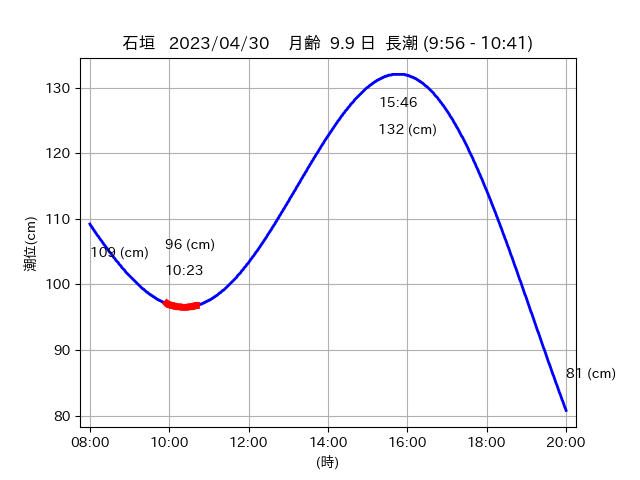
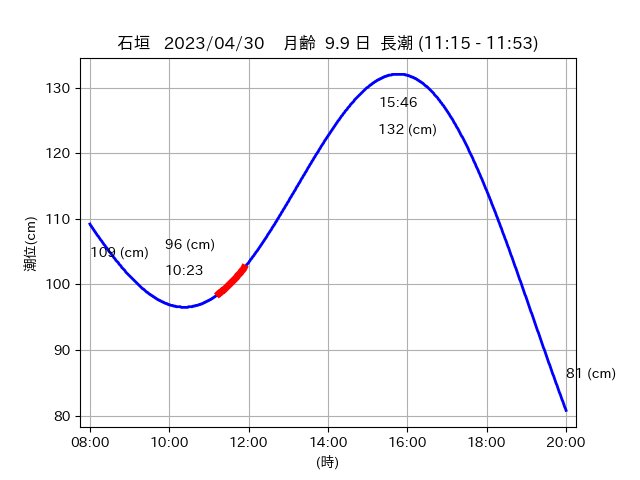

<!DOCTYPE html>
<html>
<head>
    
    <meta http-equiv="content-type" content="text/html; charset=UTF-8" />
    
        <script>
            L_NO_TOUCH = false;
            L_DISABLE_3D = false;
        </script>
    
    <style>html, body {width: 100%;height: 100%;margin: 0;padding: 0;}</style>
    <style>#map {position:absolute;top:0;bottom:0;right:0;left:0;}</style>
    <script src="https://cdn.jsdelivr.net/npm/leaflet@1.9.3/dist/leaflet.js"></script>
    <script src="https://code.jquery.com/jquery-3.7.1.min.js"></script>
    <script src="https://cdn.jsdelivr.net/npm/bootstrap@5.2.2/dist/js/bootstrap.bundle.min.js"></script>
    <script src="https://cdnjs.cloudflare.com/ajax/libs/Leaflet.awesome-markers/2.0.2/leaflet.awesome-markers.js"></script>
    <link rel="stylesheet" href="https://cdn.jsdelivr.net/npm/leaflet@1.9.3/dist/leaflet.css"/>
    <link rel="stylesheet" href="https://cdn.jsdelivr.net/npm/bootstrap@5.2.2/dist/css/bootstrap.min.css"/>
    <link rel="stylesheet" href="https://netdna.bootstrapcdn.com/bootstrap/3.0.0/css/bootstrap-glyphicons.css"/>
    <link rel="stylesheet" href="https://cdn.jsdelivr.net/npm/@fortawesome/fontawesome-free@6.2.0/css/all.min.css"/>
    <link rel="stylesheet" href="https://cdnjs.cloudflare.com/ajax/libs/Leaflet.awesome-markers/2.0.2/leaflet.awesome-markers.css"/>
    <link rel="stylesheet" href="https://cdn.jsdelivr.net/gh/python-visualization/folium/folium/templates/leaflet.awesome.rotate.min.css"/>
    
            <meta name="viewport" content="width=device-width,
                initial-scale=1.0, maximum-scale=1.0, user-scalable=no" />
            <style>
                #map_4b741cbf0e94534c108309dc6a66b9de {
                    position: relative;
                    width: 2048.0px;
                    height: 1600.0px;
                    left: 0.0%;
                    top: 0.0%;
                }
                .leaflet-container { font-size: 1rem; }
            </style>
        
</head>
<body>
    
    
            <div class="folium-map" id="map_4b741cbf0e94534c108309dc6a66b9de" ></div>
        
</body>
<script>
    
    
            var map_4b741cbf0e94534c108309dc6a66b9de = L.map(
                "map_4b741cbf0e94534c108309dc6a66b9de",
                {
                    center: [24.279, 123.7],
                    crs: L.CRS.EPSG3857,
                    ...{
  "zoom": 12,
  "zoomControl": true,
  "preferCanvas": false,
}

                }
            );

            

        
    
            var tile_layer_738caef83555c2770a66f0b3cdea6cc8 = L.tileLayer(
                "https://cyberjapandata.gsi.go.jp/xyz/seamlessphoto/{z}/{x}/{y}.jpg",
                {
  "minZoom": 0,
  "maxZoom": 18,
  "maxNativeZoom": 18,
  "noWrap": false,
  "attribution": "\u5730\u7406\u9662\u5730\u56f3",
  "subdomains": "abc",
  "detectRetina": false,
  "tms": false,
  "opacity": 1,
}

            );
        
    
            tile_layer_738caef83555c2770a66f0b3cdea6cc8.addTo(map_4b741cbf0e94534c108309dc6a66b9de);
        
    
            var marker_d644f2c6438f99c840f9371b05057b3d = L.marker(
                [24.3039, 123.6624],
                {
}
            ).addTo(map_4b741cbf0e94534c108309dc6a66b9de);
        
    
            var icon_b563fb43d32c387a2a723a6a28f7843e = L.AwesomeMarkers.icon(
                {
  "markerColor": "orange",
  "iconColor": "white",
  "icon": "info-sign",
  "prefix": "glyphicon",
  "extraClasses": "fa-rotate-0",
}
            );
        
    
        var popup_8985bd81ebafddf870813a36cc504eae = L.popup({
  "maxWidth": "100%",
});

        
            
                var html_63e280a9183a7e90868a25753e7febed = $(`<div id="html_63e280a9183a7e90868a25753e7febed" style="width: 100.0%; height: 100.0%;"><table><tr><td></td></tr><tr><td><center>20230430 No.1 </center></table></td></tr></table</div>`)[0];
                popup_8985bd81ebafddf870813a36cc504eae.setContent(html_63e280a9183a7e90868a25753e7febed);
            
        

        marker_d644f2c6438f99c840f9371b05057b3d.bindPopup(popup_8985bd81ebafddf870813a36cc504eae)
        ;

        
    
    
                marker_d644f2c6438f99c840f9371b05057b3d.setIcon(icon_b563fb43d32c387a2a723a6a28f7843e);
            
    
            var poly_line_b27427e0e005bc1ff80ff1438611dd1a = L.polyline(
                [[24.3039, 123.6624], [24.3058, 123.6607]],
                {"bubblingMouseEvents": true, "color": "#FF00FF", "dashArray": null, "dashOffset": null, "fill": false, "fillColor": "#FF00FF", "fillOpacity": 0.2, "fillRule": "evenodd", "lineCap": "round", "lineJoin": "round", "noClip": false, "opacity": 1.0, "smoothFactor": 1.0, "stroke": true, "weight": 3}
            ).addTo(map_4b741cbf0e94534c108309dc6a66b9de);
        
    
            var marker_93fd1e61fcaa14d19bd0246797df233b = L.marker(
                [24.2924, 123.6699],
                {
}
            ).addTo(map_4b741cbf0e94534c108309dc6a66b9de);
        
    
            var icon_e479860d1c3b63697cea5d14df0c7b84 = L.AwesomeMarkers.icon(
                {
  "markerColor": "orange",
  "iconColor": "white",
  "icon": "info-sign",
  "prefix": "glyphicon",
  "extraClasses": "fa-rotate-0",
}
            );
        
    
        var popup_e642a4352817ef2e55dee79ee1aceb6d = L.popup({
  "maxWidth": "100%",
});

        
            
                var html_d7742f4126d03c7e57b18c45efa0bb68 = $(`<div id="html_d7742f4126d03c7e57b18c45efa0bb68" style="width: 100.0%; height: 100.0%;"><table><tr><td></td></tr><tr><td><center>20230430 No.2 </center></table></td></tr></table</div>`)[0];
                popup_e642a4352817ef2e55dee79ee1aceb6d.setContent(html_d7742f4126d03c7e57b18c45efa0bb68);
            
        

        marker_93fd1e61fcaa14d19bd0246797df233b.bindPopup(popup_e642a4352817ef2e55dee79ee1aceb6d)
        ;

        
    
    
                marker_93fd1e61fcaa14d19bd0246797df233b.setIcon(icon_e479860d1c3b63697cea5d14df0c7b84);
            
    
            var poly_line_8eda75adee0eb7b7523668f8073a7dd3 = L.polyline(
                [[24.2924, 123.6699], [24.2887, 123.6733]],
                {"bubblingMouseEvents": true, "color": "#00FFFF", "dashArray": null, "dashOffset": null, "fill": false, "fillColor": "#00FFFF", "fillOpacity": 0.2, "fillRule": "evenodd", "lineCap": "round", "lineJoin": "round", "noClip": false, "opacity": 1.0, "smoothFactor": 1.0, "stroke": true, "weight": 3}
            ).addTo(map_4b741cbf0e94534c108309dc6a66b9de);
        
    
            var marker_fd7625482b36ff25846bc9c3f5d70d51 = L.marker(
                [24.281, 123.6798],
                {
}
            ).addTo(map_4b741cbf0e94534c108309dc6a66b9de);
        
    
            var icon_152de6f268aff7902402127bc0ec9dba = L.AwesomeMarkers.icon(
                {
  "markerColor": "orange",
  "iconColor": "white",
  "icon": "info-sign",
  "prefix": "glyphicon",
  "extraClasses": "fa-rotate-0",
}
            );
        
    
        var popup_f104666cd92515a6262b4e0e6643687a = L.popup({
  "maxWidth": "100%",
});

        
            
                var html_fc77c535e2900e00b3a204552f3393ce = $(`<div id="html_fc77c535e2900e00b3a204552f3393ce" style="width: 100.0%; height: 100.0%;"><table><tr><td></td></tr><tr><td><center>20230430 No.3 </center></table></td></tr></table</div>`)[0];
                popup_f104666cd92515a6262b4e0e6643687a.setContent(html_fc77c535e2900e00b3a204552f3393ce);
            
        

        marker_fd7625482b36ff25846bc9c3f5d70d51.bindPopup(popup_f104666cd92515a6262b4e0e6643687a)
        ;

        
    
    
                marker_fd7625482b36ff25846bc9c3f5d70d51.setIcon(icon_152de6f268aff7902402127bc0ec9dba);
            
    
            var poly_line_f59ccc020a586d34b3aed851249626ac = L.polyline(
                [[24.281, 123.6798], [24.2803, 123.6848]],
                {"bubblingMouseEvents": true, "color": "#00FFFF", "dashArray": null, "dashOffset": null, "fill": false, "fillColor": "#00FFFF", "fillOpacity": 0.2, "fillRule": "evenodd", "lineCap": "round", "lineJoin": "round", "noClip": false, "opacity": 1.0, "smoothFactor": 1.0, "stroke": true, "weight": 3}
            ).addTo(map_4b741cbf0e94534c108309dc6a66b9de);
        
    
            var marker_c0f2ee0faf734b05add27092bc9fb1cc = L.marker(
                [24.2772, 123.7034],
                {
}
            ).addTo(map_4b741cbf0e94534c108309dc6a66b9de);
        
    
            var icon_5ddf25a03931365cd5d93fe40a073f15 = L.AwesomeMarkers.icon(
                {
  "markerColor": "orange",
  "iconColor": "white",
  "icon": "info-sign",
  "prefix": "glyphicon",
  "extraClasses": "fa-rotate-0",
}
            );
        
    
        var popup_f98928553aceb37cb14582ccf49858ac = L.popup({
  "maxWidth": "100%",
});

        
            
                var html_9de959a1198fb3458c8469d3c8c42335 = $(`<div id="html_9de959a1198fb3458c8469d3c8c42335" style="width: 100.0%; height: 100.0%;"><table><tr><td></td></tr><tr><td><center>20230430 No.4 </center></table></td></tr></table</div>`)[0];
                popup_f98928553aceb37cb14582ccf49858ac.setContent(html_9de959a1198fb3458c8469d3c8c42335);
            
        

        marker_c0f2ee0faf734b05add27092bc9fb1cc.bindPopup(popup_f98928553aceb37cb14582ccf49858ac)
        ;

        
    
    
                marker_c0f2ee0faf734b05add27092bc9fb1cc.setIcon(icon_5ddf25a03931365cd5d93fe40a073f15);
            
    
            var poly_line_5587a813381f9e72a4e02d2227fe44e9 = L.polyline(
                [[24.2772, 123.7034], [24.2802, 123.6972]],
                {"bubblingMouseEvents": true, "color": "#FF00FF", "dashArray": null, "dashOffset": null, "fill": false, "fillColor": "#FF00FF", "fillOpacity": 0.2, "fillRule": "evenodd", "lineCap": "round", "lineJoin": "round", "noClip": false, "opacity": 1.0, "smoothFactor": 1.0, "stroke": true, "weight": 3}
            ).addTo(map_4b741cbf0e94534c108309dc6a66b9de);
        
</script>
</html>